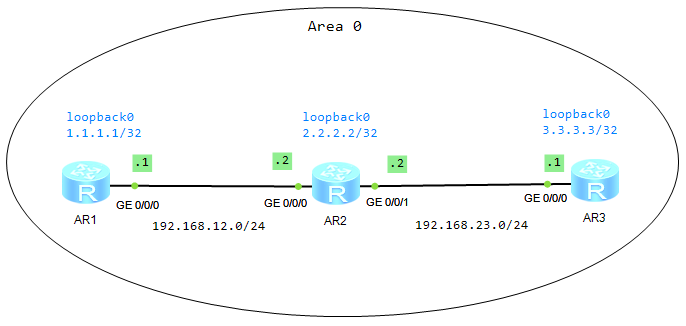

| 命令 | 说明 |
|---|---|
| ospf | 启动 OSPF 路由进程 |
| reset ospf 1 process | 重启 OSPF 进程；用户视图 |
| rouer-id | 配置路由器 ID |
| area | 设置区域 |
| network | 宣告网络 |
| display ospf brief | 查看 OSPF 概要信息 |
| display ospf process-id brief | 查看 OSPF 概要信息 |
| display ospf interface | 显示 OSPF 接口信息 |
| display ospf lsdb | 显示 OSPF 数据库表 |
| display ospf peer [brief] | 显示 OSPF 邻居表 |
| display ospf routing-table | 显示 OSPF 路由表 |
| display ip routing-table protocol ospf | 查看 OSPF 路由 |

ospf [process-id]
router-id [router-id]
area [area-id]
network [network-address wildcard-mask]
return
display ip interface
display ospf interface
display ospf peer
display ospf lsdb
display ip routing-tablef
display ip routing-table protocol ospf
save
system-view undo info-center enable sysname AR1 inter g0/0/0 ip address 192.168.12.1 24 quit int loopback 0 ip address 1.1.1.1 32 quit ospf 1 router-id 1.1.1.1 area 0 network 192.168.12.0 0.0.0.255 network 1.1.1.1 0.0.0.0 return display ip interface display ip interface brief display ospf interface display ospf peer display ospf peer brief display ospf lsdb display ip routing-table display ip routing-table protocol ospf save